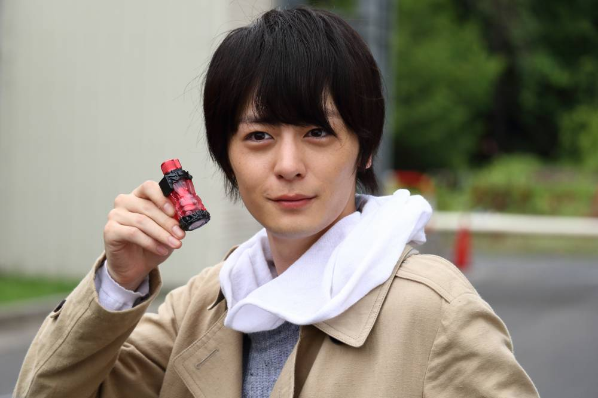
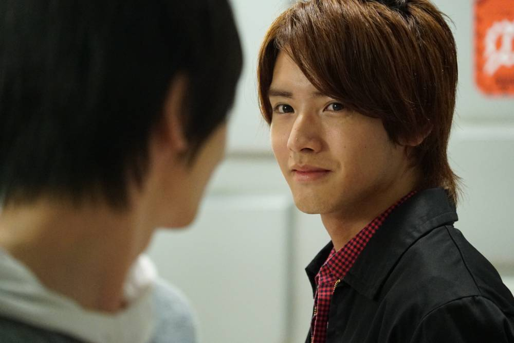
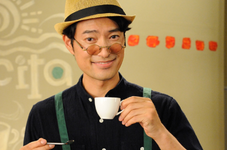
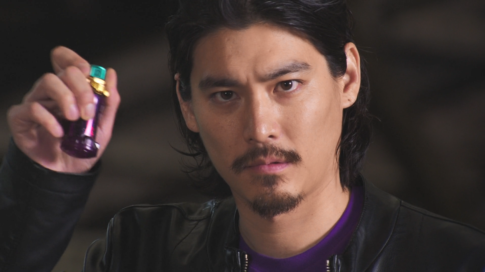
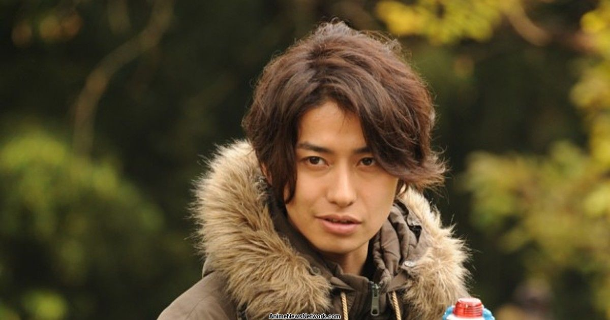

Main Characters
Sento Kiryu

- Transformation: Kamen Rider Build
- Age: 26
- Height: 176 cm (5.77 ft)
- Job: Physicist
- Actor: Atsuhiro Inukai
- Fun Fact: The name Sento Kiryu was given by Master when he was found.
According to Master, the name Sento was taken from the basic build form Rabbit Tank.
The last name Kiryu was taken from Master's favourite barbershop “Barber Kiryu”.
Ryuga Banjo

- Transformation: Kamen Rider Cross-Z
- Age: 23
- Height: 178 cm (5.84 ft)
- Occupation: Former Martial Artist
- Actor: Eiji Akaso
- Fun Fact: Banjo who was arrested as a murderer, is rescued by Kamen Rider Build when he escapes from the enemy’s hideout.
This was his first meeting with Sento, his future to be a hero and partner.
Soichi Isurugi (Master)

- Transformation: Blood Stalk
- Age: 48
- Height: 186 cm (6.10 ft)
- Job: Owner of cafe Nascita (former astronaut)
- Actor: Yasuyuki Maekawa
- Fun Fact: He is called Master by most of the characters in the show.
This is because in Japan you call the owner of a cafe “Master”
Gentoku Himuro

- Transformation: Kamen Rider Rogue
- Age: 35
- Height: 180 cm (5.91 ft)
- Job: Tohto Government Special Adviser to the Prime Minister
- Actor: Kensei Mikami
- Fun Fact: He is the son of the Prime Minister of the Tohto Government and is very well-known for his horrible fashion sense.
At first, he looks like a very serious, scary person, but he actually can't eat peppers and can't buy train tickets alone.
Kazumi Sawatari

- Transformation: Kamen Rider Grease
- Age: 29
- Height: 175 cm (5.74 ft)
- Job: Landlord/owner of Sawatari farm
- Actor: Kohei Takeda
- Fun Fact: He has three best friends called “Sanba Garasu” which means a crow with three wings.
They follow Kazumi wherever he goes and calls him “Kashira” which means boss.